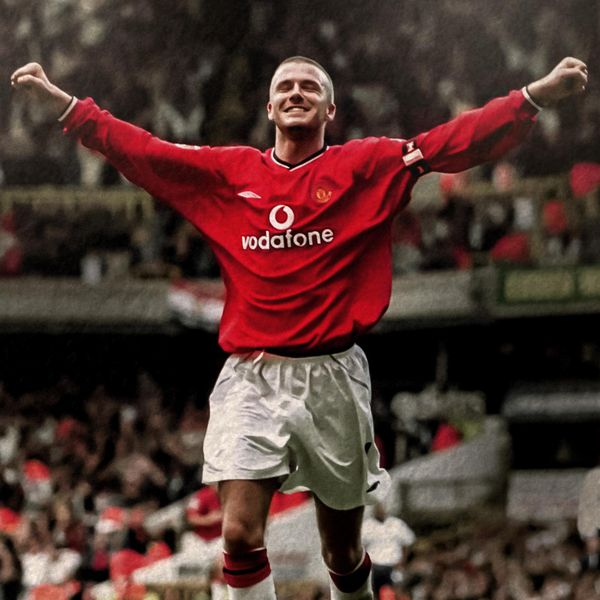

RIVALDO - 1999
- Un très grand soliste
Rivaldo
est choisi par Pelé pour faire partie du FIFA 100, liste des 125 plus grands joueurs vivants du monde. Il remporte le Ballon d'Or en 1999, à l'age de 27 ans.
Nationalité : Brésilienne
Né le : 19 avril 1972, à Recife (BRE)
Taille : 1,86
Poids : 75 kg
Poste : milieu
Clubs : Paulista (1989-1991), Santa Cruz Recife (1991-1992), Mogi-Mirim (1992-1993), Corinthians (1993-1994), Palmeiras (1994-1996), Deportivo La Corogne (1996-1997), FC Barcelone (1997-2002), Milan AC (2002-septembre 2003), Cruzeiro (janvier-février 2004) et Olympiakos Le Pirée (depuis juillet 2004)
Palmarès : Coupe du monde 2002 ; Coupe des Confédérations 1997 ; Copa America 1999 ; Supercoupe d'Europe 1997 et 2003 ; Ligue des champions 2003 (sans jouer la finale) ; Championnat du Brésil 1994 ; Championnat de l'Etat de Sao Paulo 1994 et 1996 ; Championnat d'Espagne 1998 et 1999 ; Coupe d'Espagne 1998 ; Coupe d'Italie 2003 ; Championnat du monde Juniors 1993
Bilan en club : 1025 matchs, 653 buts
Bilan en équipe du Brésil : 74 sélections A, 34 buts (1993-2003)
Bilan en phase finale de Coupe du monde : 2 participations (1er en 2002 ; 2e en 1998), 14 matches, 8 buts (1998-2002)
Palmarès Ballon d'Or : vainqueur en 1999
Classement du Ballon d’Or France Football 1999 :
Rivaldo (Brésil / FC Barcelone),
219 pts.

David Beckham (Angleterre / Manchester United),
154 pts.
Andriy Chevtchenko (Ukraine / Milan AC),
64 pts.
Retour à l'accueil
 RIVALDO - 1999
RIVALDO - 1999